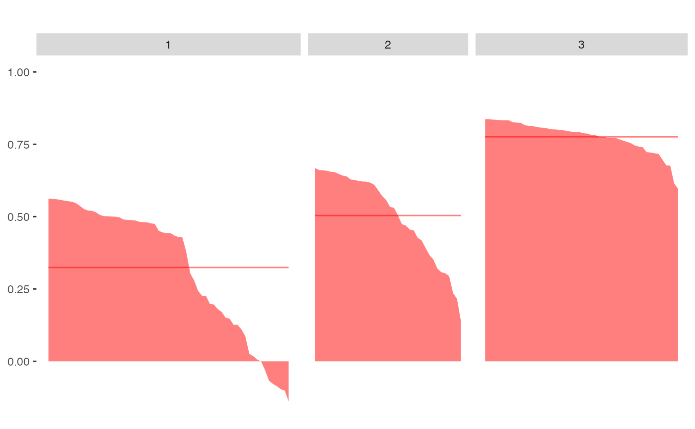

Silhouette index and plot
sil.RdThis function creates silhouette indices and silhouette plots of each cluster. The plot presents also the mean of the silhouette indices per cluster.
Arguments
- distdata
A distance matrix (n x n) or dist object.
- idmedoid
A vector of id medoids (see Details).
- idcluster
A vector of cluster membership (see Details).
- title
A title of the plot.
Value
Function returns a list with following components:
result is a data frame of the silhouette indices for all objects
plot is the silhouette plots of each cluster.
Details
The silhouette index of object i is calculated by $$si(i)=\frac{b_i-a_i}{max(a_i, b_i)}$$ where \(a_i\) is the average distance of object i to all objects within the cluster, and \(b_i\) is the average distance of object i to all objects within the nearest cluster.
The idmedoid argument corresponds to the idcluster argument.
If the length of idmedoid is 3, for example, the idcluster has
to have 3 unique memberships, or it returns Error otherwise. The
length of the idcluster has also to be equal to n
(the number of objects).
References
P. J. Rousseeuw. 1987 Silhouettes: a graphical aid to the interpretation and validation of cluster analysis. Journal of Computational and Applied Mathematics, vol. 20, pp. 53-65
Author
Weksi Budiaji
Contact: budiaji@untirta.ac.id
Examples
distiris <- as.matrix(dist(iris[,1:4]))
res <- fastkmed(distiris, 3)
silhouette <- sil(distiris, res$medoid, res$cluster)
silhouette$result[c(1:3,70:75,101:103),]
#> silhouette cluster
#> 1 0.83673357 3
#> 2 0.79331544 3
#> 3 0.80997792 3
#> 70 0.66754095 2
#> 71 -0.03063885 1
#> 72 0.57112907 2
#> 73 0.01773359 1
#> 74 0.30800460 2
#> 75 0.35178413 2
#> 101 0.49020081 1
#> 102 0.12628381 1
#> 103 0.55530899 1
silhouette$plot
